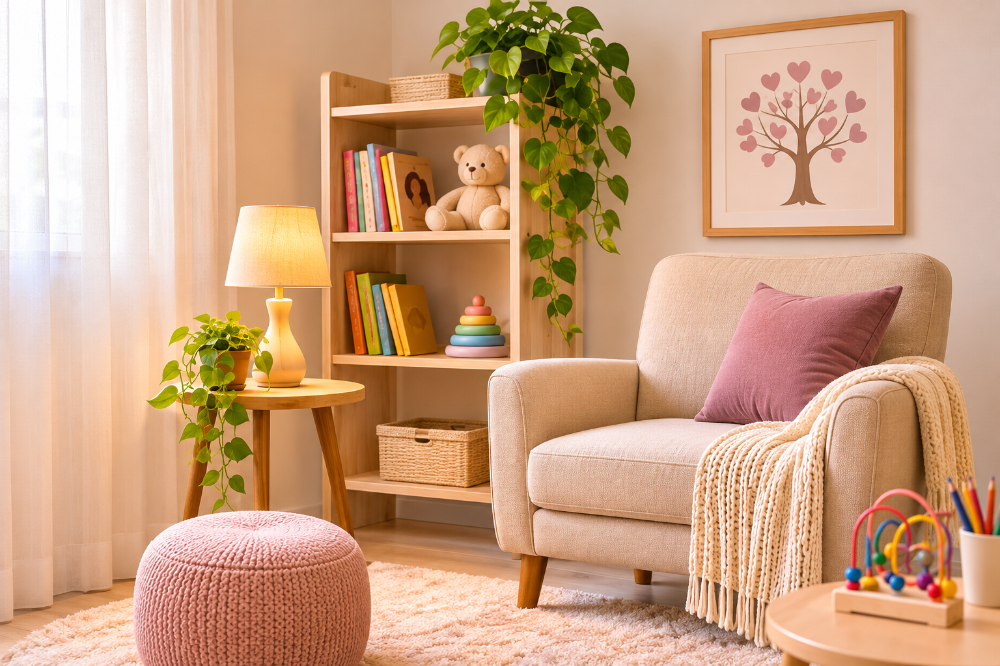

Atendimento
especializado em Cuiabá
Psicóloga Infantil em Cuiabá: Acolhimento e Desenvolvimento
Encontre o apoio ideal para o desenvolvimento emocional do seu filho. Um espaço seguro e empático em Cuiabá para lidar com ansiedade, medos e desafios de comportamento, trazendo clareza e acolhimento para toda a família.
Atendimento especializado e focado no bem-estar em Cuiabá e região.
